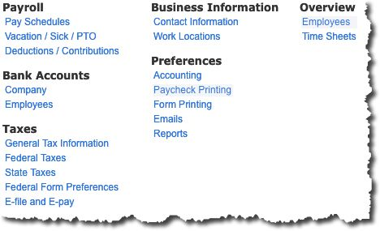
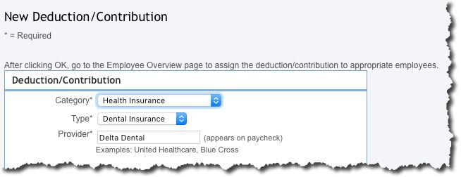

Taking on your company’s payroll with QuickBooks Online? Knowing what you’re up against ahead of time will make your setup tasks much easier.
Payroll is probably the most complex element of small business accounting. Not only are you directly responsible to your employees, but you also have to make sure you’re handling everything related to benefits and payroll taxes correctly.
Whether you’re switching from a manual system to QuickBooks Online, or you’ve just hired your first employee, you’ll soon discover that the site can make your payroll-related tasks much more organized and accurate – speeding up the process tremendously.
But before you start getting ready for your first payroll run, you have a lot of setup work to be done. Be sure to leave yourself time before those first paychecks are expected.
We’ll provide some step-by-step instruction, but initially, we just want you to see what information you’ll need to have available and how QuickBooks Online handles it. This is not meant to be a payroll setup tutorial.
There’s no particular order set in stone for your payroll preparation tasks, although you will need to provide some background information about your company and its policies before you can start creating employee records.
QuickBooks Online doesn’t walk you through the steps required. It does though display a page with links to all of the data you’ll have to enter. Click the gear icon in the upper right, and then click Payroll Settings. You’ll see this screen:

QuickBooks Online’s Payroll Settings screen displays links to the pages where you’ll manage your setup tasks.
You would have entered information about your Contact Information and Work Locations (under the Business Information heading) when you first signed on to QuickBooks Online. At the same time, you would have been exposed to the Chart of Accounts, which already has accounts designated for payroll. You can see them by clicking Preferences | Accounting, but please do not customize these. If modifications are needed, we’ll do them for you.
How often will you pay your employees? Go up to the Payroll heading in the upper left and click on Pay Schedules. Click Create and open the drop-down list next to Pay Period to select the frequency desired. Then enter the date for the first payroll you’ll run in QuickBooks Online and the end date for the period that it covers. Click the box below if you want this to be the default setting for all employees. Then click OK to return to the previous page.
Open the Vacation and Sick Leave Policies window. If you don’t yet have accrual rules for these paid days off, let us help you here. It’s complicated. When you’re done, click the back arrow to return to the Pay Policies window and select Deductions/Contributions. Are you offering benefits like health insurance? You’ll need to have your paperwork and information handy before you start completing this section.

Before you can pay employees, you’ll need to have entered information about the benefits you offer so you can withhold dollars for them.
Click the plus sign (+) in front of Add a New Deduction/Contribution and complete the fields here, then click OK. You’ll assign these deductions to employees on their individual records in QuickBooks Online. If there are any Employee Garnishments needed (like child support), click the down arrow next to Add Garnishment for and select the worker from the list. You’ll provide details for these in the window that opens. This information was most likely provided to you by the agency requesting it. When you’re done, click OK.
If you’re new to payroll and have never dealt with payroll taxes before, you’re going to need our help getting this complicated element set up correctly. Even if you have, we’d recommend that you let us work with you. QuickBooks Online does a good job of providing guidance here, but failure to submit payroll taxes (or pay them incorrectly) can lead to penalties and fines – or worse.
There are other setup tasks you’ll need to complete, like:
Setup is by far the most challenging part of processing payroll in QuickBooks Online. Once that’s done, you’ll just be entering hours and making modifications. Please do connect with us if you’re planning to take this on, and we’ll make sure you get a good start.